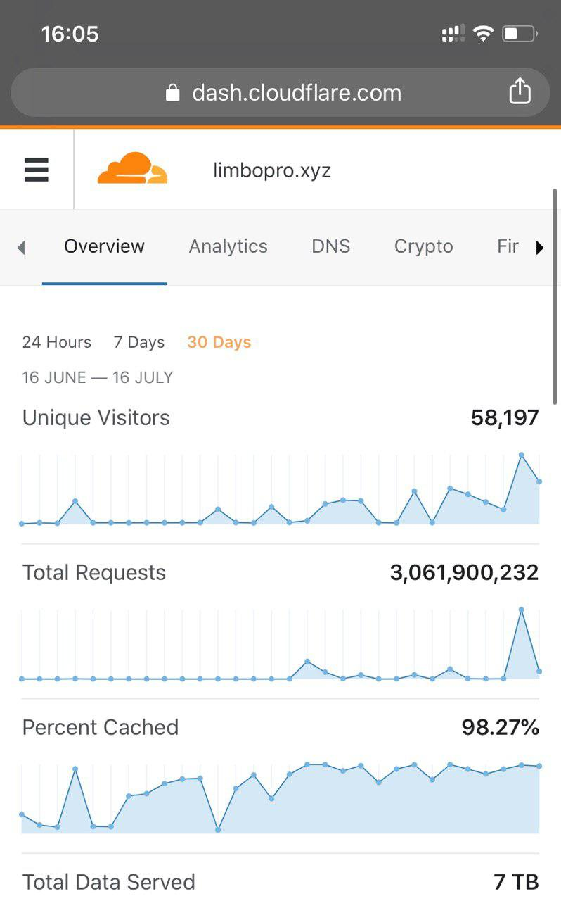

<?xml version="1.0" encoding="UTF-8"?>
<rss version="2.0"
xmlns:content="http://purl.org/rss/1.0/modules/content/"
xmlns:dc="http://purl.org/dc/elements/1.1/"
xmlns:slash="http://purl.org/rss/1.0/modules/slash/"
xmlns:atom="http://www.w3.org/2005/Atom"
xmlns:wfw="http://wellformedweb.org/CommentAPI/">
<channel>
<title>毒奶博主丨欢迎使用代理访问本站。 - 运营通报</title>
<link>https://limbopro.xyz/category/Bulletin/</link>
<atom:link href="https://limbopro.xyz/feed/category/Bulletin/" rel="self" type="application/rss+xml" />
<language>zh-CN</language>
<description></description>
<lastBuildDate>Mon, 30 Dec 2019 11:36:00 +0800</lastBuildDate>
<pubDate>Mon, 30 Dec 2019 11:36:00 +0800</pubDate>
<item>
<title>Google Adsense 正式上线</title>
<link>https://limbopro.xyz/archives/6791.html</link>
<guid>https://limbopro.xyz/archives/6791.html</guid>
<pubDate>Mon, 30 Dec 2019 11:36:00 +0800</pubDate>
<dc:creator>毒奶</dc:creator>
<description><![CDATA[本文隶属于 运营通报 分类，点击分类名称查看更多相关主题；主理人说于12月26日起，本博客正式启用Google Adsense，且已开启广告平衡实验；12月28日，着手优化广告位布局；1.移除谷...]]></description>
<content:encoded xml:lang="zh-CN"><![CDATA[
<p>本文隶属于 <a href="../../../category/Bulletin/index.html">运营通报</a> 分类，点击分类名称查看更多相关主题；</p><h2>主理人说</h2><p></p><p>于12月26日起，本博客正式启用<a href="https://www.google.com/adsense/">Google Adsense</a>，且已开启广告平衡实验；</p><p></p><p>12月28日，着手优化广告位布局；<br>1.移除谷歌广告自行定义的五个投放区域，以避免干扰大家正常阅读文章内容；<br>2.广告将出现在<strong>Page页面</strong>，以及<strong>Page页面</strong>跳转至<strong>archives页面</strong>时；<br>3.容易关闭，无重大干扰；<br>4.archives页面（即文章内）广告位已全部由我手动移除（谷歌咋想的？投这里；<br>5.以上针对移动端广告的说明；<br>6.PC浏览器访问博客视觉良好，会以横幅方式展示广告，每Page页不会超过2-3个；<br>7.<strong>archives页面</strong>广告位也已被移除；<br>8.如上上个图，于12月27日起，已开启ABtest，即广告平衡实验，如果实验成功，广告展示会更少，体验会更好，收益不变；<br>9.<strong>如果想在本博客看到广告，请酌情针对本域名关闭adblock或adguard</strong>；</p><p>爱你们，<br>以上。</p><p>毒奶</p>
]]></content:encoded>
<slash:comments>0</slash:comments>
<comments>https://limbopro.xyz/archives/6791.html#comments</comments>
<wfw:commentRss>https://limbopro.xyz/feed/archives/6791.html</wfw:commentRss>
</item>
<item>
<title>Cloudflare清退边缘丨运营通报 30TB+流量过境；</title>
<link>https://limbopro.xyz/archives/2106.html</link>
<guid>https://limbopro.xyz/archives/2106.html</guid>
<pubDate>Wed, 14 Aug 2019 14:53:00 +0800</pubDate>
<dc:creator>毒奶</dc:creator>
<description><![CDATA[一个事实基本上可以确认的事实是，Cloudflare并不会清退；]]></description>
<content:encoded xml:lang="zh-CN"><![CDATA[
<h2>一个事实</h2><p>基本上可以确认的事实是，Cloudflare并不会清退；</p><p class="more"><a href="../../../archives/2106.html" title="Cloudflare清退边缘丨运营通报 30TB+流量过境；">[...]</a></p>
]]></content:encoded>
<slash:comments>0</slash:comments>
<comments>https://limbopro.xyz/archives/2106.html#comments</comments>
<wfw:commentRss>https://limbopro.xyz/feed/archives/2106.html</wfw:commentRss>
</item>
<item>
<title>网站镜像丨Gitpages</title>
<link>https://limbopro.xyz/archives/1504.html</link>
<guid>https://limbopro.xyz/archives/1504.html</guid>
<pubDate>Sun, 28 Jul 2019 03:27:00 +0800</pubDate>
<dc:creator>毒奶</dc:creator>
<description><![CDATA[该图片由Timur Kozmenko在Pixabay上发布主理人说这或许也算是 Typecho 的一种好处吧，可实现全自动化 Pull & Push。]]></description>
<content:encoded xml:lang="zh-CN"><![CDATA[
<p><br>该图片由<a href="https://pixabay.com/zh/users/Timrael-12759911/?utm_source=link-attribution&amp;utm_medium=referral&amp;utm_campaign=image&amp;utm_content=4270252">Timur Kozmenko</a>在<a href="https://pixabay.com/zh/?utm_source=link-attribution&amp;utm_medium=referral&amp;utm_campaign=image&amp;utm_content=4270252">Pixabay</a>上发布</p><h2>主理人说</h2><p>这或许也算是 Typecho 的一种好处吧，可实现全自动化 Pull & Push。</p></br></img><p class="more"><a href="../../../archives/1504.html" title="网站镜像丨Gitpages">[...]</a></p>
]]></content:encoded>
<slash:comments>0</slash:comments>
<comments>https://limbopro.xyz/archives/1504.html#comments</comments>
<wfw:commentRss>https://limbopro.xyz/feed/archives/1504.html</wfw:commentRss>
</item>
<item>
<title>一个敬告</title>
<link>https://limbopro.xyz/archives/1376.html</link>
<guid>https://limbopro.xyz/archives/1376.html</guid>
<pubDate>Sun, 21 Jul 2019 19:57:00 +0800</pubDate>
<dc:creator>毒奶</dc:creator>
<description><![CDATA[本站有CDN，如果被攻击也只会出现最长一分钟的切换备用服务导致的宕机。## Stupid]]></description>
<content:encoded xml:lang="zh-CN"><![CDATA[
<p>本站有CDN，如果被攻击也只会出现<code>最长一分钟</code>的切换备用服务导致的宕机。## Stupid</p>
]]></content:encoded>
<slash:comments>0</slash:comments>
<comments>https://limbopro.xyz/archives/1376.html#comments</comments>
<wfw:commentRss>https://limbopro.xyz/feed/archives/1376.html</wfw:commentRss>
</item>
<item>
<title>大佬吹牛群丨XDDoS 评测指北丨9 TB+35.8 亿请求</title>
<link>https://limbopro.xyz/archives/1316.html</link>
<guid>https://limbopro.xyz/archives/1316.html</guid>
<pubDate>Fri, 19 Jul 2019 23:29:00 +0800</pubDate>
<dc:creator>毒奶</dc:creator>
<description><![CDATA[主理人序继上次压测之后，终于有时间好好体验XDDoS服务，虽然本站已开启全静态防御策略+缓存（绝对防御），但Cloudflare免费防御流量面对无限机器还是显得耗不起，差点到了一瞬被Cloudf...]]></description>
<content:encoded xml:lang="zh-CN"><![CDATA[
<h1>主理人序</h1><p>继<a href="../../../archives/1229.html">上次压测</a>之后，终于有时间好好体验<code>XDDoS</code>服务，虽然本站已开启全静态防御策略+缓存（绝对防御），但Cloudflare免费防御流量面对无限机器还是显得耗不起，差点到了一瞬被Cloudflare清退的地步（并不夸张）。</p><p>累计下来，9 TB Total Data Served +35.8 亿请求。</p><h2>XDDoS介绍</h2><p>按理说，我不应该给他做介绍的，在这么公开的情况下。所以，假设你能看懂这篇文章在表达什么，那你便懂了，如果没看懂则这可能跟你的需求没多大关联，忽略即可。</p><p class="more"><a href="../../../archives/1316.html" title="大佬吹牛群丨XDDoS 评测指北丨9 TB+35.8 亿请求">[...]</a></p>
]]></content:encoded>
<slash:comments>0</slash:comments>
<comments>https://limbopro.xyz/archives/1316.html#comments</comments>
<wfw:commentRss>https://limbopro.xyz/feed/archives/1316.html</wfw:commentRss>
</item>
<item>
<title>出来混，错了就要认，挨打要立正</title>
<link>https://limbopro.xyz/archives/1229.html</link>
<guid>https://limbopro.xyz/archives/1229.html</guid>
<pubDate>Tue, 16 Jul 2019 16:03:00 +0800</pubDate>
<dc:creator>毒奶</dc:creator>
<description><![CDATA[近期运营通报]]></description>
<content:encoded xml:lang="zh-CN"><![CDATA[
<h1>近期运营通报</h1><p></p></img><p class="more"><a href="../../../archives/1229.html" title="出来混，错了就要认，挨打要立正">[...]</a></p>
]]></content:encoded>
<slash:comments>0</slash:comments>
<comments>https://limbopro.xyz/archives/1229.html#comments</comments>
<wfw:commentRss>https://limbopro.xyz/feed/archives/1229.html</wfw:commentRss>
</item>
</channel>
</rss>